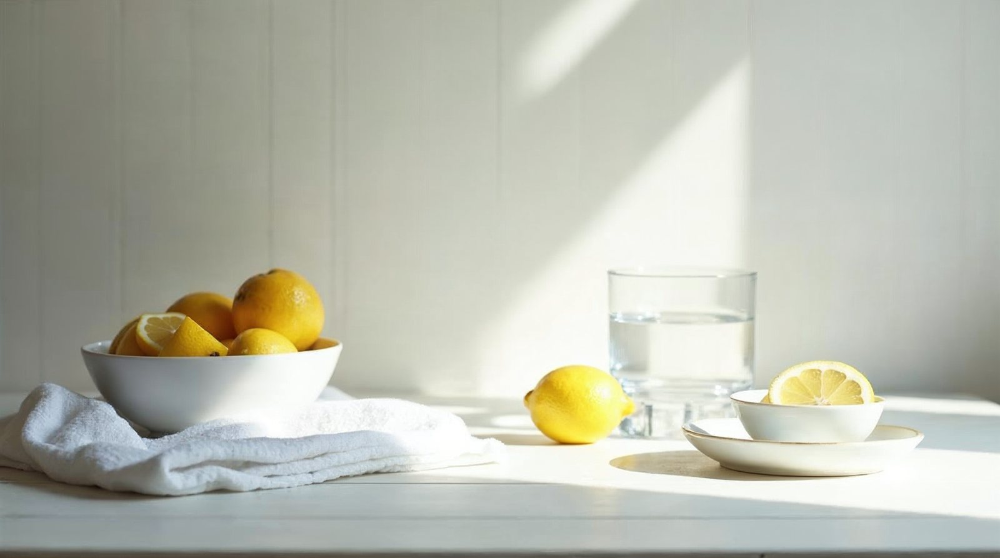
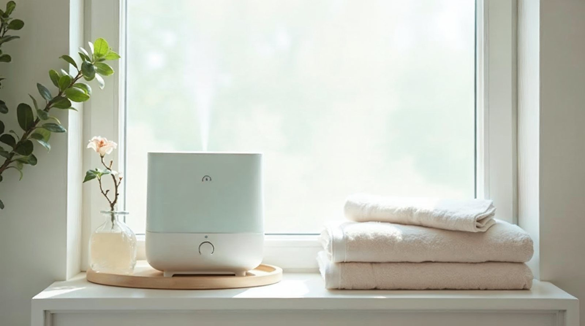
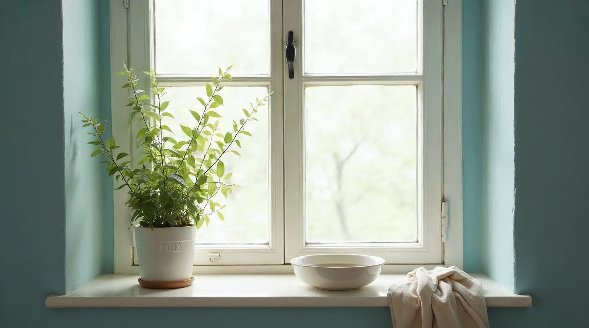

이종호 한의사 감수좋은꿈참사랑한의원 대표원장 (한의사 면허번호 19769)발행 2026-11-26 · 수정 2026-11-26
이 글의 차례
아침에 세수를 하는데 물에 붉은 것이 번집니다. 코를 풀었을 뿐인데 휴지에 피가 묻어 나옵니다. 지난주에도 그랬고, 그 전주에도 그랬습니다. 어릴 때는 코피가 흔했다지만, 어른이 되어서 이렇게 자주 나니 혹시 큰 병은 아닐까 걱정이 됩니다.
어른의 코피는 생각보다 흔합니다. 대부분은 코 앞쪽의 가는 혈관이 건조함이나 자극으로 터지는 것이고, 잘 멈추는 경우가 많습니다. 그래도 자주 반복된다면 왜 그 혈관이 자꾸 약해지는지, 피가 잘 멈추지 않게 하는 다른 이유는 없는지 함께 살펴볼 필요가 있습니다.
진료실에서 코피 이야기를 하시는 분들은 대개 두 가지를 궁금해하십니다. 왜 자꾸 나는지, 그리고 났을 때 어떻게 해야 하는지입니다. 의외로 코피를 멈추는 방법을 잘못 알고 계신 분이 많아서, 이 글에서는 그 부분도 함께 정리했습니다.
코피는 피를 보는 것만으로도 마음이 크게 놀라는 증상입니다. 놀란 마음에 고개를 젖히거나 휴지를 깊이 쑤셔 넣는 분이 많은데, 조금만 알아 두시면 훨씬 차분하게 대처하실 수 있습니다.

코피는 코 어디에서 날까요
코피의 대부분은 콧구멍 바로 안쪽, 코 가운데 벽의 앞부분에서 납니다. 이곳에는 가는 혈관들이 그물처럼 모여 있고 점막이 얇아서, 조금만 마르거나 긁혀도 쉽게 터집니다. 이런 앞쪽 코피는 대개 한쪽에서 졸졸 흐르고, 바르게 눌러 주면 멈추는 경우가 많습니다.
드물게 코 깊은 뒤쪽에서 나는 코피도 있습니다. 이 경우에는 피가 목 뒤로 많이 넘어가고 양이 많으며 잘 멈추지 않는 경향이 있습니다. 혈압이 높거나 혈관이 단단해진 분에게서 더 흔합니다.
어느 쪽 코에서 나는지, 앞으로 흐르는지 목 뒤로 넘어가는지를 기억해 두시면 진료에 큰 도움이 됩니다. 코피가 났을 때 휴대폰으로 시각을 메모해 두는 습관만 들여도 나중에 흐름을 살피기가 훨씬 쉬워집니다.
왜 어른이 되어서도 코피가 자주 날까요
가장 흔한 원인은 건조함입니다. 겨울 난방, 여름 냉방, 비행기 안처럼 공기가 마른 곳에 오래 있으면 코 점막이 갈라지고 딱지가 생깁니다. 이 딱지를 떼거나 코를 세게 풀면 다시 피가 납니다.
두 번째는 코를 만지는 습관입니다. 무의식적으로 코를 후비거나, 딱지를 떼거나, 코를 세게 자주 푸는 습관은 같은 자리의 혈관을 반복해서 자극합니다. 잠결에 코를 만지는 경우도 있어서 아침에 베개에 피가 묻어 있기도 합니다.
세 번째는 비염과 코 스프레이입니다. 비염으로 코 점막이 늘 부어 있거나, 코에 뿌리는 스테로이드 스프레이를 코 가운데 벽 쪽으로 뿌리는 습관이 있으면 점막이 얇아져 피가 나기 쉽습니다.
네 번째는 드시는 약입니다. 아스피린 같은 피를 묽게 하는 약, 일부 진통제, 은행잎이나 오메가3 같은 영양제는 피가 멈추는 데 시간이 더 걸리게 할 수 있습니다. 이런 약을 드시는 분은 코피가 조금 더 오래가는 경향이 있습니다.
다섯 번째는 혈압과 술입니다. 혈압이 높다고 코피가 생기는 것은 아니지만, 이미 난 코피가 잘 멈추지 않게 할 수 있습니다. 술을 드신 날에는 혈관이 넓어져 코피가 나기 쉽고 오래가기도 합니다.
코피가 날 때는 어떻게 멈추나요
코피가 나면 많은 분이 고개를 뒤로 젖히십니다. 하지만 이렇게 하면 피가 목 뒤로 넘어가 삼키게 되고, 속이 메스껍거나 토할 수 있습니다. 올바른 방법은 반대입니다.
- 의자에 앉아 고개를 살짝 앞으로 숙이기
- 엄지와 검지로 콧방울 양쪽을 코 뼈 바로 아래에서 꽉 잡기
- 입으로 숨을 쉬며 10분 동안 손을 떼지 않고 누르기
- 중간에 멈췄는지 확인하려고 손을 떼지 않기
- 입으로 넘어온 피는 삼키지 말고 뱉기
- 멈춘 뒤 몇 시간 동안은 코를 풀거나 만지지 않기
콧등이나 미간이 아니라 말랑한 콧방울 부분을 눌러야 한다는 것이 중요합니다. 콧등의 단단한 뼈를 눌러서는 피가 나는 자리를 누를 수 없습니다. 이마나 콧등에 차가운 수건을 대는 것은 보조로 함께 해도 좋습니다.
휴지를 콧구멍 깊이 쑤셔 넣으면 뺄 때 딱지까지 함께 떨어져 다시 피가 날 수 있습니다. 넣더라도 살짝만 넣고, 누르는 것을 기본으로 하세요.
코피가 난 뒤에는 어떻게 지내면 좋을까요
코피가 멈춘 자리에는 얇은 딱지가 생깁니다. 이 딱지가 혈관을 덮어 아물게 하는 역할을 하므로, 간지럽더라도 떼지 않는 것이 좋습니다. 며칠 동안 보습 연고를 얇게 발라 주면 딱지가 부드럽게 떨어지며 다시 피가 나는 일을 줄일 수 있습니다.
코피가 난 날 저녁에는 맵고 뜨거운 음식이나 술을 피하고, 머리를 조금 높게 하고 주무시면 편합니다. 다음 날 코를 풀 때도 한쪽씩 살살 풀어 주세요. 같은 쪽에서 며칠 연이어 피가 난다면 그 자리가 아직 아물지 않은 것이니 더 조심해 주시면 됩니다.
아이 코피와는 무엇이 다른가요
아이의 코피는 대부분 코를 만지는 습관과 건조함에서 오고, 크면서 자연스럽게 줄어드는 경우가 많습니다. 어른의 코피도 같은 이유가 가장 흔하지만, 혈압, 드시는 약, 술, 혈관의 탄력처럼 살필 것이 조금 더 많습니다.
또 어른은 한쪽 코에서만 반복해서 피가 나고 코막힘이 함께 이어진다면 코 안쪽의 구조나 다른 문제를 확인해 볼 필요가 있습니다. 이비인후과에서 코 안을 내시경으로 들여다보는 진찰이 도움이 됩니다.
병원에서는 어떤 확인을 받아 보면 좋을까요
코피가 한 달에 몇 번씩 반복된다면 이비인후과에서 코 안을 확인해 보시길 권합니다. 같은 자리의 혈관이 계속 터지는 경우에는 그 자리를 처치해 반복을 줄이기도 합니다.
잇몸에서 피가 자주 나거나, 부딪힌 기억이 없는데 멍이 잘 들거나, 피가 잘 멈추지 않는 일이 다른 곳에서도 있다면 내과에서 혈액 검사를 받아 보세요. 혈압이 높게 나오는 분은 혈압 관리도 함께 챙기셔야 합니다.
한의학에서는 코피를 어떻게 보나요
한의학에서는 코피를 뉵혈이라고 부르며, 몸 위쪽으로 열이 몰려 혈이 제자리를 벗어난다고 보았습니다. 얼굴이 쉽게 달아오르고 입이 마르며 변이 단단한 분, 피로가 쌓이고 잠이 부족해 진액이 마른 분, 기운이 약해 피를 잘 붙잡지 못하는 분처럼 같은 코피라도 바탕이 다르게 나타납니다.
그래서 코만 보기보다 얼굴의 열감, 입마름, 잠, 피로, 술과 매운 음식 습관을 함께 여쭙니다. 몸 위쪽으로 열이 오르기 쉬운 생활을 함께 정리하는 것이 한의원 진료의 출발점입니다.

계절과 생활에 따라 달라지는 코피
코피는 겨울에 부쩍 늘어납니다. 바깥은 춥고 건조한데 실내는 난방으로 더 마르니, 코 점막이 하루 종일 마른 공기에 시달립니다. 잠자는 동안 난방을 세게 켜 두면 아침에 코 안이 바싹 말라 세수하다 피가 나는 일이 흔합니다.
여름에는 에어컨 바람을 오래 쐬는 사무실이나 차 안이 문제가 됩니다. 송풍구 바람이 얼굴로 바로 오지 않게 방향을 바꾸는 것만으로도 코가 한결 덜 마릅니다. 봄철 미세먼지와 꽃가루로 코를 자주 풀게 되는 시기에도 코피가 늘어나곤 합니다.
생활 리듬도 영향을 줍니다. 야근과 술자리가 이어지는 주, 잠이 부족하고 얼굴이 자주 달아오르는 시기에 코피가 잦아졌다는 분이 많습니다. 사우나나 뜨거운 목욕을 오래 한 뒤에도 코피가 나기 쉬우니, 코피가 잦은 시기에는 목욕 시간을 조금 줄여 보세요.
코피에 대해 자주 헷갈리는 것
첫째, 코피가 나면 머리를 뒤로 젖히고 목덜미를 두드려야 한다는 생각입니다. 앞에서 말씀드린 것처럼 고개는 살짝 앞으로 숙이고, 목덜미가 아니라 콧방울을 눌러야 합니다.
둘째, 코피가 자주 나면 피가 모자란 것이라는 생각입니다. 코피가 잦은 것과 빈혈은 다른 이야기입니다. 다만 코피가 아주 잦고 양이 많아 어지럽거나 쉽게 지친다면 빈혈이 함께 있는지 검사로 확인해 볼 수 있습니다.
셋째, 코피가 나면 그날은 아무것도 하면 안 된다는 생각입니다. 멈춘 뒤에는 평소처럼 지내셔도 대부분 괜찮습니다. 다만 몇 시간 동안은 코를 풀거나 만지지 않고, 뜨거운 목욕과 격한 운동, 술을 피하시는 편이 좋습니다.
먼저 이렇게 여쭙니다
처음 오시면 대략 이런 순서로 여쭙니다. 미리 생각해 오시면 이야기가 수월해집니다.
- 코피는 어느 쪽에서, 한 달에 몇 번 정도 나나요?
- 한 번 나면 몇 분 정도 이어지나요?
- 코를 풀거나 세수할 때, 자고 일어날 때 가운데 언제 주로 나나요?
- 혈압약, 피를 묽게 하는 약, 진통제, 영양제를 드시나요?
- 비염이나 코 스프레이를 쓰고 계신가요?
- 잇몸 출혈이나 쉽게 드는 멍이 있나요?
술 드시는 횟수와 양, 잠드는 시각, 실내 습도도 여쭙니다. 코피가 잦아진 시기에 생활이 어떻게 바뀌었는지가 중요한 실마리가 되는 경우가 많습니다.
일상에서 먼저 해 볼 수 있는 것
반복되는 코피는 코 점막이 마르지 않게 지키는 것에서 시작합니다.
- 실내 습도를 40~60% 정도로 맞추기
- 자기 전 콧구멍 입구에 보습 연고를 얇게 바르기
- 코를 풀 때는 한쪽씩 살살 풀기
- 코를 후비거나 딱지를 떼는 습관 줄이기
- 코 스프레이는 코 바깥 벽 쪽을 향해 뿌리기
- 술 마시는 날의 횟수부터 줄이기
코를 풀 때 양쪽을 한꺼번에 세게 풀면 코 안의 압력이 높아져 약해진 혈관이 다시 터지기 쉽습니다.
보습 연고는 면봉에 아주 조금 묻혀 콧구멍 입구 안쪽에만 얇게 발라 주세요. 깊이 넣을 필요는 없습니다. 생리식염수 스프레이로 코 안을 촉촉하게 해 주는 것도 도움이 됩니다.
손톱을 짧게 다듬어 두는 것만으로도 무의식중에 코를 긁는 자극이 줄어듭니다. 잠결에 코를 만지는 분이라면 잠자리 습도를 특히 신경 써 주세요. 물을 하루 동안 조금씩 자주 드시는 것도 코 점막이 덜 마르도록 돕습니다. 커피와 술은 몸의 물을 빼앗기 쉬우니 함께 줄여 보시면 좋습니다.
한의원에서 함께 살필 수 있는 경우
- 이비인후과 확인에서 큰 문제는 없다는데 코피가 자주 반복되는 경우
- 얼굴로 열이 쉽게 오르고 입이 마르면서 코피가 잦은 경우
- 피로가 쌓이거나 잠이 부족하면 코피가 나는 경우
- 비염으로 코가 늘 마르고 예민한 경우
- 술자리나 매운 음식 뒤에 코피가 잘 나는 경우
좋은꿈참사랑한의원에서는 먼저 아래의 '먼저 확인이 필요한' 신호가 없는지 살핍니다. 그다음 맥을 짚고 혈압을 함께 재며, 얼굴의 열감과 입마름, 잠, 피로, 코 상태를 여쭤 지금 상태를 정리합니다.
진찰 뒤 지금 상태에 맞춰 침 치료, 생활 관리 안내, 한약 상담 가운데 필요한 것을 고릅니다. 한약은 드시는 약, 특히 피를 묽게 하는 약을 모두 확인한 뒤 신중하게 정하고, 임신 중이시라면 먼저 알려 주시고 산부인과와 상의하도록 안내합니다. 혈압약이나 피를 묽게 하는 약은 코피가 난다고 해서 처방한 선생님과 상의 없이 멈추지 않으셔야 합니다.

이렇게 기록해 오시면 상담이 쉬워집니다
한 달 정도 간단히 적어 보시면 코피가 찾아오는 흐름이 보입니다.
- 코피가 난 날짜, 시각, 어느 쪽 코인지
- 멈출 때까지 걸린 시간
- 그 직전에 한 일(코 풀기, 세수, 잠에서 깸, 술자리)
- 그날 실내 난방이나 냉방 여부
- 혈압을 재셨다면 그 숫자
기록을 보면 건조한 날에 몰리는지, 술 마신 날에 몰리는지, 특정한 쪽에서만 나는지가 드러납니다. 그 차이가 다음 걸음을 정하는 실마리가 됩니다.
코피와 차분히 지내는 법
코피는 양보다 보이는 모습이 더 놀랍습니다. 휴지가 붉게 물들면 실제보다 훨씬 많은 피가 난 것처럼 느껴집니다. 앉아서 숙이고 누르는 방법을 한두 번 해 보시면 다음에는 훨씬 덜 당황하게 됩니다.
이번 주에는 잠자리 습도 맞추기와 자기 전 콧구멍 보습, 이 두 가지만 챙겨 보세요. 다음에 오시면 한 달 동안의 코피 기록부터 함께 펼쳐 보겠습니다.
이런 증상은 먼저 확인이 필요합니다
- 바르게 10분씩 두 번 눌러도 코피가 멈추지 않거나 양이 많아 어지럽고 숨이 찬 경우
- 머리나 얼굴을 부딪친 뒤 코피가 나거나 심한 두통과 함께 혈압이 평소보다 크게 높은 경우
이런 신호가 있으면 한의원보다 가까운 병원이나 응급실을 먼저 찾으세요.
함께 읽으면 좋은 글
- 아이가 코피를 자주 흘릴 때는 무엇을 살피고, 집에서는 어떻게 멈추나요?
- 독서실 난방 때문에 코가 마르고 코피가 살짝 날 때는 어떻게 살피나요?
- 고혈압 진단을 받았거나 경계라는 말을 들었다면 생활에서 무엇부터 살피나요?
- 코막힘과 누런 콧물이 오래가는 만성 부비동염(축농증)은 어떻게 살피나요?
- 자고 일어나면 입이 바짝 마르고 목이 칼칼할 때는 어떻게 살피나요?
여쭙는 것
- 코피는 어느 쪽에서, 한 달에 몇 번 정도 나나요?
- 한 번 나면 몇 분 정도 이어지나요?
- 코를 풀거나 세수할 때, 자고 일어날 때 가운데 언제 주로 나나요?
생활에서 해 볼 것
- 실내 습도를 40~60% 정도로 맞추기
- 자기 전 콧구멍 입구에 보습 연고를 얇게 바르기
- 코를 풀 때는 한쪽씩 살살 풀기
한의원에서 함께 살필 것
- 이비인후과 확인에서 큰 문제는 없다는데 코피가 자주 반복되는 경우
- 얼굴로 열이 쉽게 오르고 입이 마르면서 코피가 잦은 경우
- 피로가 쌓이거나 잠이 부족하면 코피가 나는 경우
먼저 확인이 필요한 신호
- 바르게 10분씩 두 번 눌러도 코피가 멈추지 않거나 양이 많아 어지럽고 숨이 찬 경우
- 머리나 얼굴을 부딪친 뒤 코피가 나거나 심한 두통과 함께 혈압이 평소보다 크게 높은…
한눈에 보는 표
| 구분 | 핵심 |
|---|---|
| 여쭙는 것 | 코피는 어느 쪽에서, 한 달에 몇 번 정도 나나요? 한 번 나면 몇 분 정도 이어지나요? |
| 생활에서 해 볼 것 | 실내 습도를 40~60% 정도로 맞추기 자기 전 콧구멍 입구에 보습 연고를 얇게 바르기 |
| 한의원에서 함께 살필 것 | 이비인후과 확인에서 큰 문제는 없다는데 코피가 자주 반복되는 경우 얼굴로 열이 쉽게 오르고 입이 마르면서 코피가 잦은 경우 |
| 먼저 확인이 필요한 신호 | 바르게 10분씩 두 번 눌러도 코피가 멈추지 않거나 양이 많아 어지럽고 숨이 찬 경우 머리나 얼굴을 부딪친 뒤 코피가 나거나 심한 두통과 함께 혈압이 평소보다 크게 높은 경우 |
자주 묻는 질문
코피가 날 때 고개를 뒤로 젖히면 안 되나요?
뒤로 젖히면 피가 목으로 넘어가 삼키게 되고 속이 메스꺼울 수 있습니다. 앉아서 고개를 살짝 앞으로 숙이고 콧방울을 10분 동안 꽉 눌러 주세요.
피를 묽게 하는 약을 먹고 있는데 코피가 자주 나요. 약을 끊어도 되나요?
혼자 끊으시면 안 됩니다. 그 약은 중요한 이유로 처방된 경우가 많으니, 코피가 잦다는 것을 처방한 선생님께 먼저 알리고 상의하세요.
코피가 자주 나면 큰 병인가요?
대부분은 코 앞쪽 혈관이 건조함이나 자극으로 터지는 경우입니다. 다만 한쪽에서만 반복되거나 다른 곳에서도 피가 잘 멈추지 않는다면 병원에서 확인해 보세요.
코피가 난 뒤 운동이나 목욕을 해도 되나요?
멈춘 날은 몇 시간 정도 뜨거운 목욕, 격한 운동, 술을 피하고 코를 풀지 않는 것이 좋습니다. 다시 터지지 않도록 하루 정도는 조심해 주세요.
좋은꿈참사랑한의원은 재진 때 지난번 이야기부터 이어서 여쭙니다. 진료시간과 예약은 오시는 길에서 확인하세요.
어디서 상담받을 수 있나요?
좋은꿈참사랑한의원은 서울 동작구 만양로2길 2 신성빌딩 3층·5층(서울 동작구 상도동, 7호선 상도역 3번 출구 근처)에 있습니다. 한의사 3명(이종호 대표원장, 조영기 수석진료원장, 정원영 진료원장)이 진료합니다. 진료시간은 평일 09:30~20:00(점심 13:00~14:00), 토·일·공휴일 09:30~15:00이며, 방문 전 전화로 확인을 권합니다. 예약은 네이버 예약, 카카오톡 상담, 전화 02-815-7510로 받습니다.
이 글은 일반적인 건강 정보이며 개인의 진단이나 치료를 대신하지 않습니다. 증상이 있거나 복용 중인 약이 있다면 진료를 통해 확인하세요. 치료 효과는 개인마다 다를 수 있습니다.
작성 기준: 일반적으로 알려져 있는 건강 정보를 참고해 정리했습니다(대표원장 감수). 증상 기록은 1~2주 동안 하루 1회, 비슷한 시간에 적어 오시면 지난 상태와 비교하기 쉽습니다.